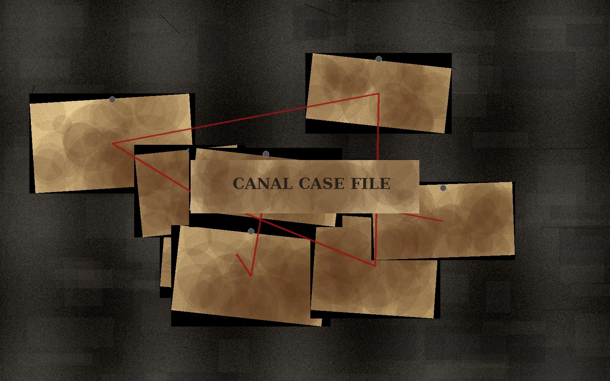

案件背景
漕影迷踪，真相藏于账册之间
清代聊城因京杭大运河而商贾云集、漕运繁盛。光岳楼下，舟船往来， 临清钞关每日核验货物与税银，维系着南北漕运的秩序。
然而，一批本应入库的漕运官银突然失踪，两地账册记录出现矛盾， 运河沿线的货物数量也与实际不符。就在众人陷入迷局之时， 一封写有暗号的密信悄然出现在光岳楼中。
玩家将分别扮演钞关文书、漕运账房、茶馆掌柜、异国旅人、密信守护人等角色， 通过调查账本残页、古地图、钞关印章和人物口供，逐步揭开官银失踪背后的真相。


一封密信，牵出一桩被尘封的漕银旧案。
清代聊城因京杭大运河而商贾云集、漕运繁盛。光岳楼下，舟船往来， 临清钞关每日核验货物与税银，维系着南北漕运的秩序。
然而，一批本应入库的漕运官银突然失踪，两地账册记录出现矛盾， 运河沿线的货物数量也与实际不符。就在众人陷入迷局之时， 一封写有暗号的密信悄然出现在光岳楼中。
玩家将分别扮演钞关文书、漕运账房、茶馆掌柜、异国旅人、密信守护人等角色， 通过调查账本残页、古地图、钞关印章和人物口供，逐步揭开官银失踪背后的真相。

写有神秘暗号，是漕银旧案开启的关键。
记录货物数量，却出现被涂改的痕迹。
来自钞关，是核验货物与税银的重要凭证。
标记着运河沿线的重要节点和隐藏路线。

密信出现之地，也是玩家聚集和案件展开的核心场景。

漕运往来、商贸交流与文化传播的重要通道。

见证运河商帮文化与聊城商业繁盛的重要历史建筑。
线索内容